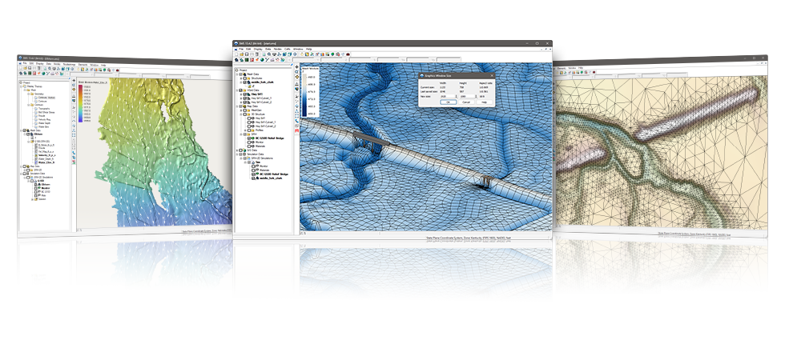

Surface-water Modeling System
Access a full range of coastal and riverine solutions with SMS

| Community | Riverine Pro | River & Coast | Build Your Own | |
|---|---|---|---|---|
| SMS Core Components | ||||
| Map, GIS, Annotations Module | O** | ✔ | ✔ | ✔ |
| Mesh Module | O** | ✔ | ✔ | ✔ |
| Grid Module | ✔ | ✔ | ✔ | |
| Scatter Module | O** | ✔ | ✔ | ✔ |
| Professional 3D Rendering and Display Options | ✔ | ✔ | ✔ | |
| Advanced Mesh Generation Methods and Mesh Quality Tools | ✔ | ✔ | ✔ | |
| Dataset Toolbox and Analysis Functions | O** | ✔ | ✔ | ✔ |
| Multi-simulation Management | ✔ | ✔ | ✔ | |
| Calibration Tools and 2D Plots | ✔ | ✔ | ✔ | |
| Riverine Models | ||||
| SRH-2D Model & Interface | O** | ✔ | ✔ | Add-on |
| HEC-RAS 2D Geometry Import & Export | ✔ | ✔ | Add-on | |
| HEC-RAS 1D Model Export | ✔ | ✔ | Add-on | |
| RMA2 Model & Interface | ✔ | ✔ | Add-on | |
| RMA4 Model & Interface | Add-on | Add-on | Add-on | |
| ADH Model & Interface | O** | Add-on | Add-on | Add-on |
| MIKE21 Geometry Import | ✔ | ✔ | ✔ | |
| Generic Model Interface | Add-on | Add-on | Add-on | |
| HYDRO_AS-2D Model**** | Add-on | Add-on | Add-on | |
| Coastal Models | ||||
| ADCIRC Model | Add-on | ✔ | Add-on | |
| ADCIRC Interface | O** | Add-on | ✔ | Add-on |
| STWAVE Model & Interface | O** | Add-on | ✔ | Add-on |
| CMS Flow Model & Interface | O** | Add-on | ✔ | Add-on |
| CMS Wave Model & Interface | O** | Add-on | ✔ | Add-on |
| WAM Model & Interface | Add-on | Add-on | Add-on | |
| CGWAVE Model & Interface | Add-on | Add-on | Add-on | |
| BOUSS-2D Model & Interface | Add-on | ✔ | Add-on | |
| GENCADE Model & Interface | Add-on | Add-on | Add-on | |
| Riverine & Coastal Models | ||||
| TUFLOW FV Model (Local 1) | Add-on | Add-on | Add-on | |
| TUFLOW FV GPU Module (Local 1) | Add-on | Add-on | Add-on | |
| TUFLOW FV AD Module (Local 1) | Add-on | Add-on | Add-on | |
| TUFLOW Model & Interface (Local 1) | Add-on | Add-on | Add-on | |
| TUFLOW M2D/QT Module (Local 1) | Add-on | Add-on | Add-on | |
| TUFLOW GPU Module (Local 1) | Add-on | Add-on | Add-on | |
| Particle Tracking Model | ||||
| PTM Model & Interface | Add-on | Add-on | Add-on | |
| Maintenance | ||||
| First year of maintenance included | ✔ | ✔ | ✔ |